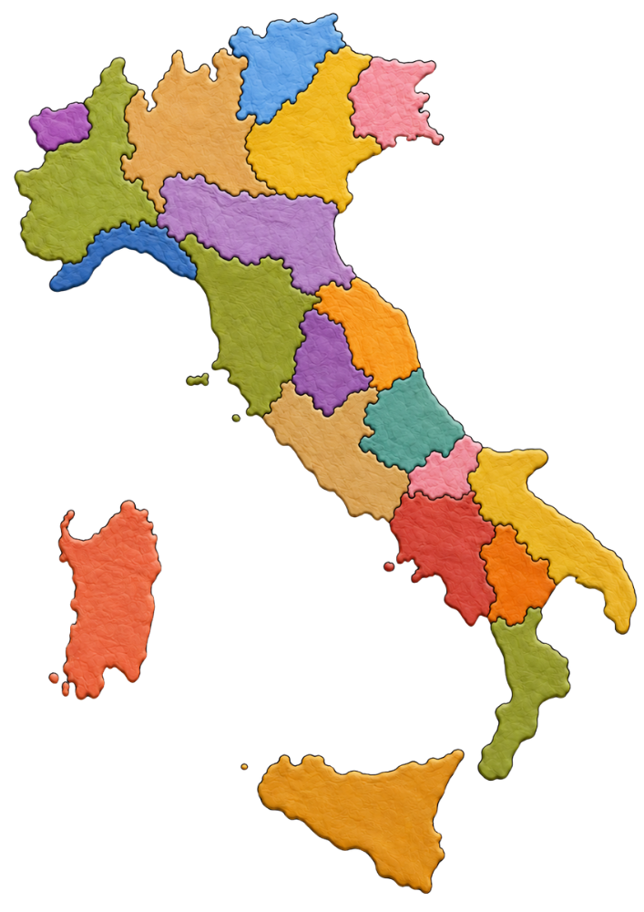

0 di 20 corrette
0 of 20 correct


“La cognizion del tempo preterito e del sito della terra è ornamento e cibo delle menti umane.”
“Knowledge of the past and of the places of the Earth is both an ornament and nourishment for the human mind.”

YouTube si apre in una nuova scheda. Gli insegnanti devono controllare i contenuti collegati prima di condividerli con gli studenti. YouTube opens in a new tab. Teachers should preview linked content before sharing it with students.
Italy Explorer is an interactive bilingual educational website that brings Italy to life through geography, history, culture, language, regional specialties, landmarks, music, notable people, and authentic tourism resources.
Students drag each Italian region to its correct location on the map.
Need a little help? Select a region card and use the 💡 Hint button to reveal a geographic clue.
After each correct match, students explore:
Students match iconic Italian landmarks and natural wonders to the regions where they are located.
Some regions feature multiple places to discover, including famous monuments and remarkable natural wonders.
Need a little help? Select a landmark card and use the 💡 Hint button to reveal the region where it is located.
After each correct match, students explore:
Students match authentic regional foods to the regions where they originated.
Need a little help? Select a specialty card and use the 💡 Hint button to reveal the region where it originated.
After each correct match, students explore:
Students select a region to explore its musical traditions.
Each region includes:
Students discover contemporary artists from different Italian regions and explore today's Italian music scene.
Each artist includes:
Students discover influential Italians from science, art, literature, music, sports, politics, and more.
Each profile includes:
Chi siamo · About First Volo Learning
Ciao! Sono Alexis Sacco, fondatrice di First Volo Learning e logopedista certificata (CCC-SLP) con oltre 21 anni di esperienza nelle scuole pubbliche.
Hi, I’m Alexis Sacco, founder of First Volo Learning and a certified Speech-Language Pathologist (CCC-SLP) with over 21 years of experience supporting students in public schools.
Attraverso First Volo Learning, creo risorse educative progettate con cura per rendere l’apprendimento linguistico visibile, insegnabile e raggiungibile.
Through First Volo Learning, I create thoughtfully designed educational resources that make language learning visible, teachable, and achievable.
Italy Explorer è stato progettato per aiutare gli studenti a esplorare la diversità delle 20 regioni d’Italia attraverso attività bilingui interattive che collegano geografia, lingua, storia, cultura, musica, specialità regionali, monumenti e risorse turistiche autentiche.
Italy Explorer was designed to help learners explore the diversity of Italy’s 20 regions through interactive bilingual activities connecting geography, language, history, culture, music, regional specialties, landmarks, and authentic tourism resources.
Grazie per esplorare l’Italia con First Volo Learning! Thank you for exploring Italy with First Volo Learning!
Le illustrazioni di monumenti, paesaggi e persone illustri sono interpretazioni artistiche create per scopi educativi e potrebbero non rappresentare con precisione l’aspetto o le proporzioni reali.
Illustrations of landmarks, landscapes, and notable people are artistic interpretations intended for educational purposes and may not depict exact appearances or proportions.